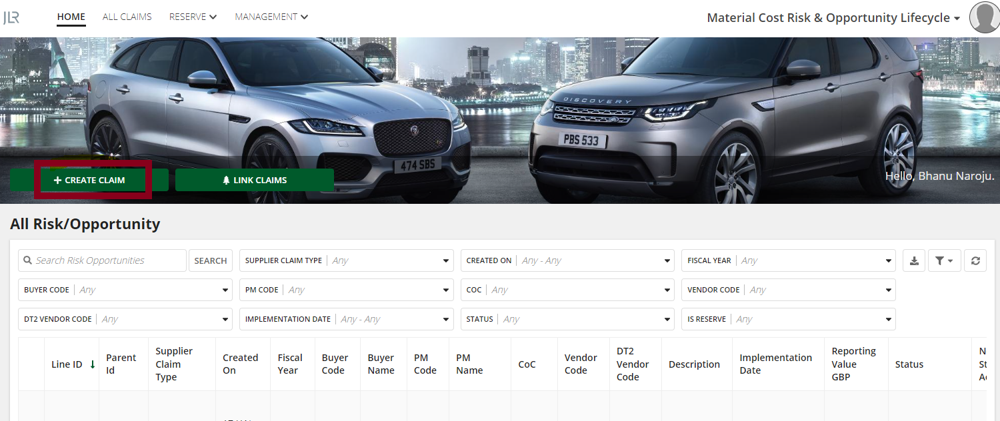
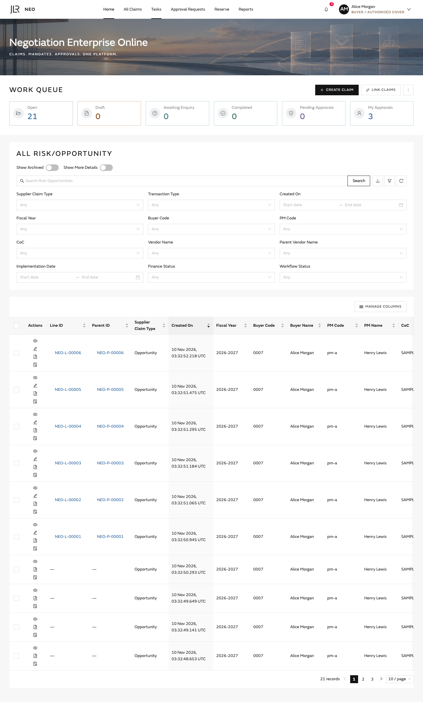
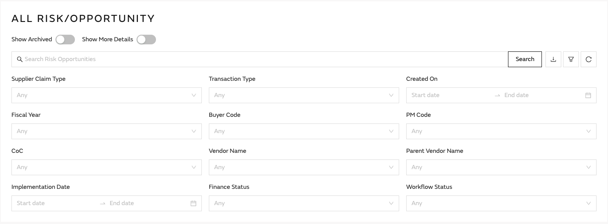
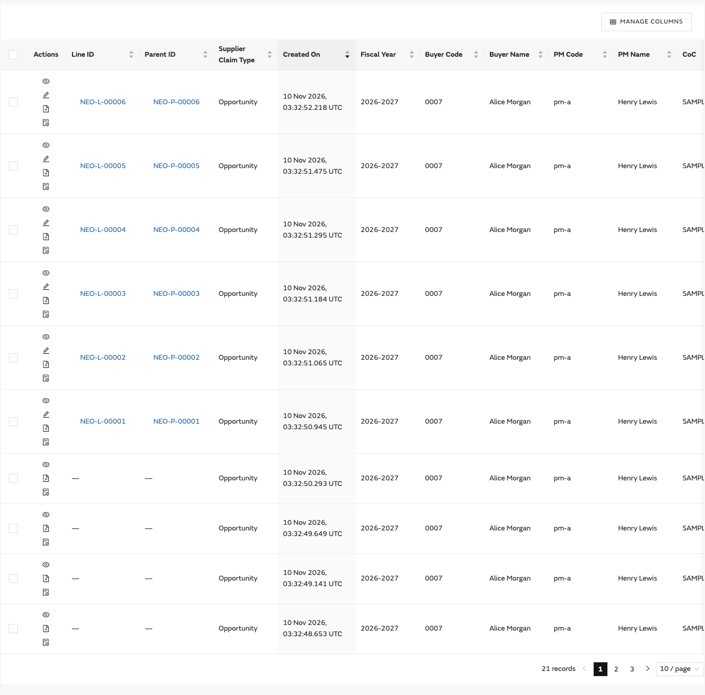

HOME · Home · Work queue & all claims
Step 1 · Full page — Review the six highlights and choose Create Claim to begin.
Drag comparison →

Step 2 · Search & filters — Search the list or combine the displayed filters. The right-hand controls provide export, filter and refresh.
Drag comparison →
Step 3 · Table & row actions — View the list, select lines and use the compact row actions.
Drag comparison →